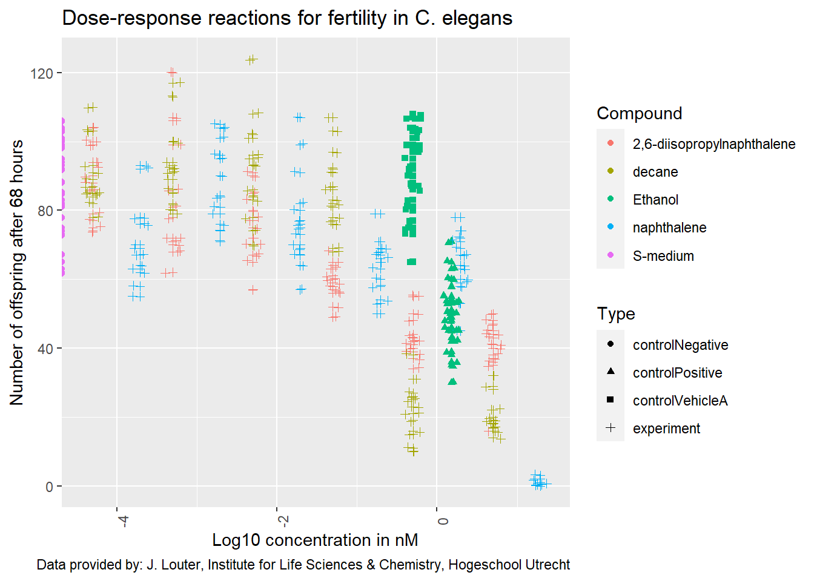

2 Reproducible Research using R
##
## Attaching package: 'dplyr'## The following objects are masked from 'package:stats':
##
## filter, lag## The following objects are masked from 'package:base':
##
## intersect, setdiff, setequal, union## here() starts at C:/Users/Gebruiker/Documents/Data-Sciences-Portfolio## tibble [360 × 34] (S3: tbl_df/tbl/data.frame)
## $ plateRow : logi [1:360] NA NA NA NA NA NA ...
## $ plateColumn : logi [1:360] NA NA NA NA NA NA ...
## $ vialNr : num [1:360] 1 1 1 1 1 2 2 2 2 2 ...
## $ dropCode : chr [1:360] "a" "b" "c" "d" ...
## $ expType : chr [1:360] "experiment" "experiment" "experiment" "experiment" ...
## $ expReplicate : num [1:360] 3 3 3 3 3 3 3 3 3 3 ...
## $ expName : chr [1:360] "CE.LIQ.FLOW.062" "CE.LIQ.FLOW.062" "CE.LIQ.FLOW.062" "CE.LIQ.FLOW.062" ...
## $ expDate : POSIXct[1:360], format: "2020-11-30" "2020-11-30" "2020-11-30" "2020-11-30" ...
## $ expResearcher : chr [1:360] "Sergio Reijnders - Ellis Herder" "Sergio Reijnders - Ellis Herder" "Sergio Reijnders - Ellis Herder" "Sergio Reijnders - Ellis Herder" ...
## $ expTime : num [1:360] 68 68 68 68 68 68 68 68 68 68 ...
## $ expUnit : chr [1:360] "hour" "hour" "hour" "hour" ...
## $ expVolumeCounted : num [1:360] 50 50 50 50 50 50 50 50 50 50 ...
## $ RawData : num [1:360] 44 37 45 47 41 35 41 36 40 38 ...
## $ compCASRN : chr [1:360] "24157-81-1" "24157-81-1" "24157-81-1" "24157-81-1" ...
## $ compName : chr [1:360] "2,6-diisopropylnaphthalene" "2,6-diisopropylnaphthalene" "2,6-diisopropylnaphthalene" "2,6-diisopropylnaphthalene" ...
## $ compConcentration : chr [1:360] "4.99" "4.99" "4.99" "4.99" ...
## $ compUnit : chr [1:360] "nM" "nM" "nM" "nM" ...
## $ compDelivery : chr [1:360] "Liquid" "Liquid" "Liquid" "Liquid" ...
## $ compVehicle : chr [1:360] "controlVehicleA" "controlVehicleA" "controlVehicleA" "controlVehicleA" ...
## $ elegansStrain : chr [1:360] "N2" "N2" "N2" "N2" ...
## $ elegansInput : num [1:360] 25 25 25 25 25 25 25 25 25 25 ...
## $ bacterialStrain : chr [1:360] "OP50" "OP50" "OP50" "OP50" ...
## $ bacterialTreatment : chr [1:360] "heated" "heated" "heated" "heated" ...
## $ bacterialOD600 : num [1:360] 0.743 0.743 0.743 0.743 0.743 0.743 0.743 0.743 0.743 0.743 ...
## $ bacterialConcX : num [1:360] 8 8 8 8 8 8 8 8 8 8 ...
## $ bacterialVolume : num [1:360] 300 300 300 300 300 300 300 300 300 300 ...
## $ bacterialVolUnit : chr [1:360] "ul" "ul" "ul" "ul" ...
## $ incubationVial : chr [1:360] "1,5 glass vial" "1,5 glass vial" "1,5 glass vial" "1,5 glass vial" ...
## $ incubationVolume : num [1:360] 1000 1000 1000 1000 1000 1000 1000 1000 1000 1000 ...
## $ incubationUnit : chr [1:360] "ul" "ul" "ul" "ul" ...
## $ incubationMethod : chr [1:360] "rockroll" "rockroll" "rockroll" "rockroll" ...
## $ incubationRPM : num [1:360] 35 35 35 35 35 35 35 35 35 35 ...
## $ bubble : logi [1:360] NA NA NA NA NA NA ...
## $ incubateTemperature: num [1:360] 20 20 20 20 20 20 20 20 20 20 ...## [1] TRUE## Warning: NAs introduced by coercion## [1] 4.99e+00 4.99e+00 4.99e+00 4.99e+00 4.99e+00 4.99e+00 4.99e+00 4.99e+00 4.99e+00 4.99e+00 4.99e+00 4.99e+00
## [13] 4.99e+00 4.99e+00 4.99e+00 4.99e-01 4.99e-01 4.99e-01 4.99e-01 4.99e-01 4.99e-01 4.99e-01 4.99e-01 4.99e-01
## [25] 4.99e-01 4.99e-01 4.99e-01 4.99e-01 4.99e-01 4.99e-01 4.99e-02 4.99e-02 4.99e-02 4.99e-02 4.99e-02 4.99e-02
## [37] 4.99e-02 4.99e-02 4.99e-02 4.99e-02 4.99e-02 4.99e-02 4.99e-02 4.99e-02 4.99e-02 4.99e-03 4.99e-03 4.99e-03
## [49] 4.99e-03 4.99e-03 4.99e-03 4.99e-03 4.99e-03 4.99e-03 4.99e-03 4.99e-03 4.99e-03 4.99e-03 4.99e-03 4.99e-03
## [61] 4.99e-04 4.99e-04 4.99e-04 4.99e-04 4.99e-04 4.99e-04 4.99e-04 4.99e-04 4.99e-04 4.99e-04 4.99e-04 4.99e-04
## [73] 4.99e-04 4.99e-04 4.99e-04 4.99e-05 4.99e-05 4.99e-05 4.99e-05 4.99e-05 4.99e-05 4.99e-05 4.99e-05 4.99e-05
## [85] 4.99e-05 4.99e-05 4.99e-05 4.99e-05 4.99e-05 4.99e-05 4.99e+00 4.99e+00 4.99e+00 4.99e+00 4.99e+00 4.99e+00
## [97] 4.99e+00 4.99e+00 4.99e+00 4.99e+00 4.99e+00 4.99e+00 4.99e+00 4.99e+00 4.99e+00 4.99e-01 4.99e-01 4.99e-01
## [109] 4.99e-01 4.99e-01 4.99e-01 4.99e-01 4.99e-01 4.99e-01 4.99e-01 4.99e-01 4.99e-01 4.99e-01 4.99e-01 4.99e-01
## [121] 4.99e-02 4.99e-02 4.99e-02 4.99e-02 4.99e-02 4.99e-02 4.99e-02 4.99e-02 4.99e-02 4.99e-02 4.99e-02 4.99e-02
## [133] 4.99e-02 4.99e-02 4.99e-02 4.99e-03 4.99e-03 4.99e-03 4.99e-03 4.99e-03 4.99e-03 4.99e-03 4.99e-03 4.99e-03
## [145] 4.99e-03 4.99e-03 4.99e-03 4.99e-03 4.99e-03 4.99e-03 4.99e-04 4.99e-04 4.99e-04 4.99e-04 4.99e-04 4.99e-04
## [157] 4.99e-04 4.99e-04 4.99e-04 4.99e-04 4.99e-04 4.99e-04 4.99e-04 4.99e-04 4.99e-04 4.99e-05 4.99e-05 4.99e-05
## [169] 4.99e-05 4.99e-05 4.99e-05 4.99e-05 4.99e-05 4.99e-05 4.99e-05 4.99e-05 4.99e-05 4.99e-05 4.99e-05 4.99e-05
## [181] 1.95e+01 1.95e+01 1.95e+01 1.95e+01 1.95e+01 1.95e+01 1.95e+01 1.95e+01 1.95e+01 1.95e+01 1.95e+01 1.95e+01
## [193] 1.95e+01 1.95e+01 1.95e+01 1.95e+00 1.95e+00 1.95e+00 1.95e+00 1.95e+00 1.95e+00 1.95e+00 1.95e+00 1.95e+00
## [205] 1.95e+00 1.95e+00 1.95e+00 1.95e+00 1.95e+00 1.95e+00 1.95e-01 1.95e-01 1.95e-01 1.95e-01 1.95e-01 1.95e-01
## [217] 1.95e-01 1.95e-01 1.95e-01 1.95e-01 1.95e-01 1.95e-01 1.95e-01 1.95e-01 1.95e-01 1.95e-02 1.95e-02 1.95e-02
## [229] 1.95e-02 1.95e-02 1.95e-02 1.95e-02 1.95e-02 1.95e-02 1.95e-02 1.95e-02 1.95e-02 1.95e-02 1.95e-02 1.95e-02
## [241] 1.95e-03 1.95e-03 1.95e-03 1.95e-03 1.95e-03 1.95e-03 1.95e-03 1.95e-03 1.95e-03 1.95e-03 1.95e-03 1.95e-03
## [253] 1.95e-03 1.95e-03 1.95e-03 1.95e-04 1.95e-04 1.95e-04 NA 1.95e-04 1.95e-04 1.95e-04 1.95e-04 1.95e-04
## [265] 1.95e-04 1.95e-04 1.95e-04 1.95e-04 1.95e-04 1.95e-04 1.50e+00 1.50e+00 1.50e+00 1.50e+00 1.50e+00 1.50e+00
## [277] 1.50e+00 1.50e+00 1.50e+00 1.50e+00 1.50e+00 1.50e+00 1.50e+00 1.50e+00 1.50e+00 1.50e+00 1.50e+00 1.50e+00
## [289] 1.50e+00 1.50e+00 1.50e+00 1.50e+00 1.50e+00 1.50e+00 1.50e+00 1.50e+00 1.50e+00 1.50e+00 1.50e+00 1.50e+00
## [301] 0.00e+00 0.00e+00 0.00e+00 0.00e+00 0.00e+00 0.00e+00 0.00e+00 0.00e+00 0.00e+00 0.00e+00 0.00e+00 0.00e+00
## [313] 0.00e+00 0.00e+00 0.00e+00 0.00e+00 0.00e+00 0.00e+00 0.00e+00 0.00e+00 0.00e+00 0.00e+00 0.00e+00 0.00e+00
## [325] 0.00e+00 0.00e+00 0.00e+00 0.00e+00 0.00e+00 0.00e+00 5.00e-01 5.00e-01 5.00e-01 5.00e-01 5.00e-01 5.00e-01
## [337] 5.00e-01 5.00e-01 5.00e-01 5.00e-01 5.00e-01 5.00e-01 5.00e-01 5.00e-01 5.00e-01 5.00e-01 5.00e-01 5.00e-01
## [349] 5.00e-01 5.00e-01 5.00e-01 5.00e-01 5.00e-01 5.00e-01 5.00e-01 5.00e-01 5.00e-01 5.00e-01 5.00e-01 5.00e-01## [1] TRUEA log(10) transformation will be performed on the x-axis (compound concentration). Some horizontal jitter will be applied to prevent overplotting.

In this experiment, ethanol (/) was used as the positive control, while S-medium (/) was used as the negative control. All values are normalized based on the negative control.